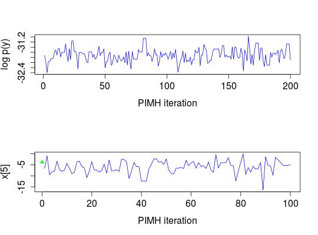
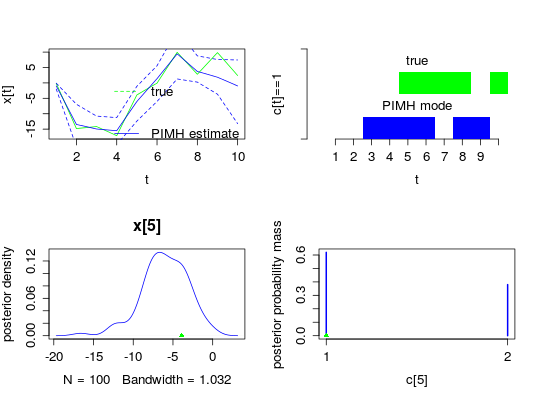

is.pimh(object)"biips_pimh_update"(object, n_iter, n_part, thin = 1, output = "l", ...)"biips_pimh_samples"(object, n_iter, n_part, thin = 1, output = "l", ...)
pimh object as returned by
biips_pimh_init.thin
iterations (default = 1)mcmcarray.list output. The string can contain several
characters in ('l', 'a'). See details. (default = 'l')rs_thres and rs_type.
See biips_smc_samples for more details.is.pimh returns TRUE if the object is of
class pimh.
The methods biips_pimh_update and biips_pimh_update
return an object of class mcmcarray.list.
biips_pimh_samples output contains one mcmcarray
member for each monitored variable returned by the variable_names()
member function of the pimh object.
If the output argument is not empty, the output contains
additional members. See details.
The members of the mcmcarray.list object are
mcmcarray objects for different variables. Assuming dim
is the dimension of the monitored variable, the mcmcarray
object is an array of dimension c(dim, n_iter) with the following
attributes (accessible with attr):
Manipulate PIMH objects.
The method biips_pimh_update performs burn-in iterations for the PIMH
algorithm.
The method biips_pimh_samples performs iterations for the PIMH
algorithm and returns samples.
The output string arguments can be used to query additional
members in the mcmcarray.list output. If output
contains:
modelfile <- system.file('extdata', 'hmm.bug', package = 'Rbiips') stopifnot(nchar(modelfile) > 0) cat(readLines(modelfile), sep = '\n')var c_true[tmax], x_true[tmax], c[tmax], x[tmax], y[tmax] data { x_true[1] ~ dnorm(0, 1/5) y[1] ~ dnorm(x_true[1], exp(logtau_true)) for (t in 2:tmax) { c_true[t] ~ dcat(p) x_true[t] ~ dnorm(0.5*x_true[t-1]+25*x_true[t-1]/(1+x_true[t-1]^2)+8*cos(1.2*(t-1)), ifelse(c_true[t]==1, 1/10, 1/100)) y[t] ~ dnorm(x_true[t]/4, exp(logtau_true)) } } model { logtau ~ dunif(-3, 3) x[1] ~ dnorm(0, 1/5) y[1] ~ dnorm(x[1], exp(logtau)) for (t in 2:tmax) { c[t] ~ dcat(p) x[t] ~ dnorm(0.5*x[t-1]+25*x[t-1]/(1+x[t-1]^2)+8*cos(1.2*(t-1)), ifelse(c[t]==1, 1/10, 1/100)) y[t] ~ dnorm(x[t]/4, exp(logtau)) } }data <- list(tmax = 10, p = c(.5, .5), logtau_true = log(1), logtau = log(1)) model <- biips_model(modelfile, data)* Parsing model in: /home/adrien-alea/workspace/biips-git/Rbiips/inst/extdata/hmm.bug * Compiling data graph Declaring variables Resolving undeclared variables Allocating nodes Graph size: 169 Sampling data Reading data back into data table * Compiling model graph Declaring variables Resolving undeclared variables Allocating nodes Graph size: 180n_part <- 50 obj_pimh <- biips_pimh_init(model, c('x', 'c[2:10]')) # Initialize* Initializing PIMHis.pimh(obj_pimh)[1] TRUEout_pimh_burn <- biips_pimh_update(obj_pimh, 100, n_part) # Burn-in* Updating PIMH with 50 particles |--------------------------------------------------| 100% |**************************************************| 100 iterations in 0.43 sout_pimh <- biips_pimh_samples(obj_pimh, 100, n_part) # Samples* Generating PIMH samples with 50 particles |--------------------------------------------------| 100% |**************************************************| 100 iterations in 0.42 ssumm_pimh_x <- biips_summary(out_pimh$x, order = 2, probs = c(0.025, 0.975)) dens_pimh_x <- biips_density(out_pimh$x) summ_pimh_c <- biips_summary(out_pimh[['c[2:10]']]) table_pimh_c <- biips_table(out_pimh[['c[2:10]']]) par(mfrow = c(2, 1)) plot(c(out_pimh_burn$log_marg_like, out_pimh$log_marg_like), type = 'l', col = 'blue', xlab = 'PIMH iteration', ylab = 'log p(y)') t <- 5 plot(out_pimh$x[t, ], type = 'l', col = 'blue', xlab = 'PIMH iteration', ylab = paste0('x[',t,']'))points(0, model$data()$x_true[t], pch = 17, col = 'green')
par(mfrow = c(2, 2)) plot(model$data()$x_true, type = 'l', col = 'green', xlab = 't', ylab = 'x[t]') lines(summ_pimh_x$mean, col = 'blue') matlines(matrix(unlist(summ_pimh_x$quant), data$tmax), lty = 2, col = 'blue') legend('topright', leg = c('true', 'PIMH estimate'), lty = c(2, 1), col = c('green', 'blue'), bty = 'n') barplot(.5*(model$data()$c_true==1), col = 'green', border = NA, space = 0, offset = 1, ylim=c(0,2), xlab='t', ylab='c[t]==1', axes = FALSE) axis(1, at=1:data$tmax-.5, labels=1:data$tmax) axis(2, line = 1, at=c(0,2), labels=NA) text(data$tmax/2, 1.75, 'true') barplot(.5*c(NA, summ_pimh_c$mode==1), col = 'blue', border = NA, space = 0, axes = FALSE, add = TRUE) text(data$tmax/2, .75, 'PIMH mode') plot(dens_pimh_x[[t]], col='blue', main = , ylab = 'posterior density') points(model$data()$x_true[t], 0, pch = 17, col = 'green') plot(table_pimh_c[[t-1]], col='blue', ylab = 'posterior probability mass')points(model$data()$c_true[t], 0, pch = 17, col = 'green')
biips_pimh_init